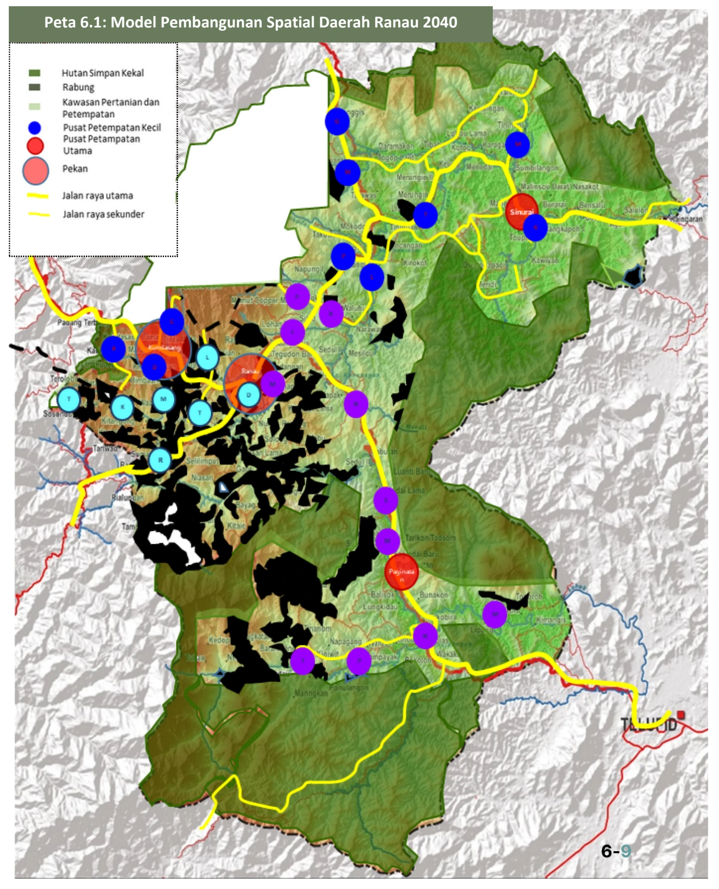
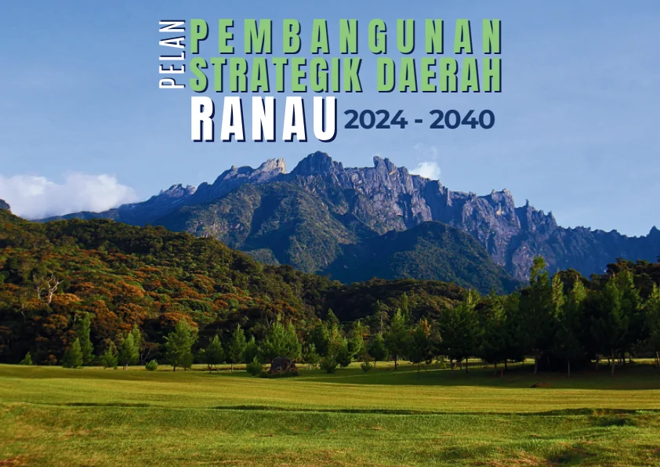

HALA TUJU RANAU 2040
Pelan Pembangunan
Strategik Daerah Ranau 2024–2040
Mengenai pelan
Merancang masa depan Ranau bersama.
Pelan Pembangunan Strategik Daerah Ranau 2024–2040 ialah panduan pembangunan jangka panjang yang merangkumi aspek fizikal, ekonomi dan sosial untuk meningkatkan kesejahteraan penduduk.
Pelan ini menghubungkan potensi pelancongan, pertanian dan modal insan dengan penyediaan infrastruktur asas, tadbir urus yang baik serta pemuliharaan alam sekitar dan warisan tempatan.
Hala tuju strategik
Visi, misi dan matlamat
Menjadikan daerah Ranau sebagai destinasi Eko dan Agro Pelancongan yang terkemuka di dunia.
MatlamatMencapai kesejahteraan lestari dan holistik melalui sinergi pembangunan pelancongan, pertanian dan modal insan, disokong oleh infrastruktur asas yang lengkap dan tadbir urus yang baik.
Rujukan: Bab 7, m.s. 7-1. Baca dalam PDF (tab baharu)
Keutamaan pembangunan
Tujuh teras, satu hala tuju
Pilih teras untuk membaca objektif pembangunannya.
Teras 01Pembangunan Persekitaran dan Masyarakat Desa ModenPersekitaran desa yang terancang, infrastruktur lengkap dan kemudahan sosial berkualiti.
Objektif pembangunan
- Mewujudkan persekitaran desa yang terancang dengan penerapan reka bentuk desa yang baik dan teknologi moden.
- Menyediakan infrastruktur asas yang lengkap untuk meningkatkan kualiti kehidupan penduduk desa.
- Menyediakan kemudahan sosial yang berkualiti dan mencukupi untuk menyokong kesejahteraan penduduk desa.
Teras 02Tadbir Urus Efektif dan EfisienPengurusan pembangunan yang cekap melalui organisasi kukuh dan kerjasama strategik.
Objektif pembangunan
- Mengukuhkan struktur organisasi tadbir urus daerah Ranau.
- Memantapkan pengurusan dan pelaksanaan pembangunan daerah Ranau.
- Mengukuhkan kerjasama strategik dengan komuniti, sektor awam, sektor swasta dan NGO.
- Mengukuhkan kedudukan kewangan dan kebolehan pihak berkuasa tempatan untuk merancakkan pembangunan ekonomi setempat.
Teras 03Pembangunan Modal Insan CemerlangPendidikan, latihan dan pembelajaran sepanjang hayat untuk memperkasakan komuniti.
Objektif pembangunan
- Menubuhkan institusi untuk pembangunan modal insan di daerah Ranau.
- Memperkasakan komuniti melalui latihan dan pembelajaran sepanjang hayat.
- Mewujudkan pembentukan modal insan melalui perusahaan sosial di daerah Ranau.
Teras 04Destinasi Pelancongan BerprestijPelancongan berkualiti yang memelihara warisan dan memberi manfaat kepada penduduk.
Objektif pembangunan
- Membangunkan penggunaan teknologi moden dalam pengurusan sektor pelancongan.
- Memastikan peningkatan tahap perkhidmatan infrastruktur pelancongan.
- Mempromosikan dan memelihara warisan budaya dan tradisi tempatan sebagai tarikan pelancong.
- Mempromosikan pelancongan yang berkualiti dan menghasilkan impak positif kepada komuniti tempatan.
- Meningkatkan kebolehan dan kemahiran dalam sektor pelancongan melalui penyediaan latihan dan pendidikan.
Teras 05Pembangunan Hab Keterjaminan MakananPertanian produktif dengan sokongan teknologi, infrastruktur dan kemahiran.
Objektif pembangunan
- Meningkatkan pengeluaran sumber makanan dalam daerah dan di peringkat bahagian Pantai Barat Sabah.
- Memantapkan dan mewujudkan infrastruktur sokongan pertanian.
- Menggalakkan penggunaan teknologi untuk meningkatkan produktiviti.
- Memperkasa pembangunan modal insan dalam industri pertanian melalui penyediaan latihan dan pendidikan.
Teras 06Pengurusan Alam dan Sumber yang LestariPemuliharaan alam, teknologi hijau dan penggunaan sumber secara bertanggungjawab.
Objektif pembangunan
- Memulihara kawasan konservasi dan kawasan sensitif alam sekitar (KSAS) dengan menggalakkan pembangunan lestari.
- Menggalakkan inovasi teknologi hijau dan meningkatkan efisiensi penggunaan sumber.
- Mengutamakan pembangunan mampan alam semula jadi bagi meningkatkan ekonomi komuniti setempat.
Teras 07Kemakmuran Sosio-EkonomiPeluang keusahawanan dan perusahaan sosial untuk meningkatkan pendapatan komuniti.
Objektif pembangunan
- Membangunkan perusahaan sosial dalam kalangan komuniti.
- Mengukuhkan pembangunan keusahawanan.
- Membangunkan perusahaan mikro, kecil dan sederhana (PMKS).
Daripada perancangan kepada tindakan
Cadangan projek utama
Antara cadangan dalam dokumen pelan. Senarai ini tidak menunjukkan status kelulusan atau kemajuan pelaksanaan semasa.
Pekan Ranau
Baik pulih pekan Ranau untuk mengukuhkan fungsinya sebagai pusat pentadbiran dan perniagaan utama daerah.
Rujukan: m.s. 9-8 (tab baharu)Pekan Kundasang
Baik pulih dan penambahbaikan pekan Kundasang serta kawasan sekitar sebagai pekan pelancongan berprestij.
Rujukan: m.s. 9-8 (tab baharu)Pusat petempatan Sinurai & Paginatan
Cadangan pembinaan pusat petempatan desa atau pekan kecil di Sinurai, Ulu Sugut dan Paginatan.
Rujukan: m.s. 9-8 (tab baharu)Pengajian pertanian tanah tinggi
Cadangan pembinaan institusi pengajian untuk pembangunan kemahiran pertanian tanah tinggi.
Rujukan: m.s. 9-24 (tab baharu)Pengajian eko & agropelancongan
Cadangan pembinaan pusat pengajian ekopelancongan dan agropelancongan.
Rujukan: m.s. 9-24 (tab baharu)Pusat maklumat pelancongan
Pusat maklumat dengan maklumat terkini tentang destinasi, aktiviti dan perkhidmatan pelancongan.
Rujukan: m.s. 9-27 (tab baharu)Tempoh perancangan
Fasa pelaksanaan
Jadual pelaksanaan yang dicadangkan dalam pelan sehingga tahun 2040.
- 01
Segera
2024–2025
- 02
Jangka pendek
2024–2028
- 03
Jangka sederhana
2029–2033
- 04
Jangka panjang
2034–2040
Sesetengah projek atau program merentas beberapa fasa. Tempoh ini ialah jadual perancangan, bukan pengesahan projek telah siap. Rujukan: Jadual 9.2, m.s. 9-6.
Pembangunan spatial
Peta perancangan Ranau 2040
Model pembangunan spatial menunjukkan hubungan antara kawasan pemuliharaan, pertanian, petempatan dan jaringan perhubungan.
- Pemuliharaan hutan simpan, Taman Kinabalu dan tanah tinggi.
- Pengekalan kawasan pertanian untuk keterjaminan makanan.
- Penambahbaikan jaringan jalan dan pengangkutan awam.
- Pembangunan pekan serta pusat petempatan mengikut hierarki perkhidmatan.
Sumber: Peta 6.1, m.s. 6-9, Pelan Pembangunan Strategik Daerah Ranau 2024–2040.

Besarkan peta
Dokumen rujukan
Terokai pelan penuh
Baca huraian strategi, senarai cadangan projek, peta dan jadual pelaksanaan dalam dokumen lengkap.
PDF 410 halaman 123 MB
Fail bersaiz besar. Sambungan Wi-Fi disarankan untuk muat turun.
Halaman ini merupakan ringkasan untuk rujukan orang awam. Sila rujuk dokumen penuh bagi butiran perancangan.